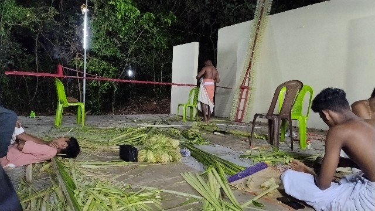

products
Index
DJ
Shits
Earth
Writings
Lab
the.man.do.earth
Tracking memories & landscapes

25.2048° N, 55.2708° E
Kannur
Refining the raw horizon. A moment kept from the circle.
MSG
COMM_LINK_V1
[ CLOSE ]